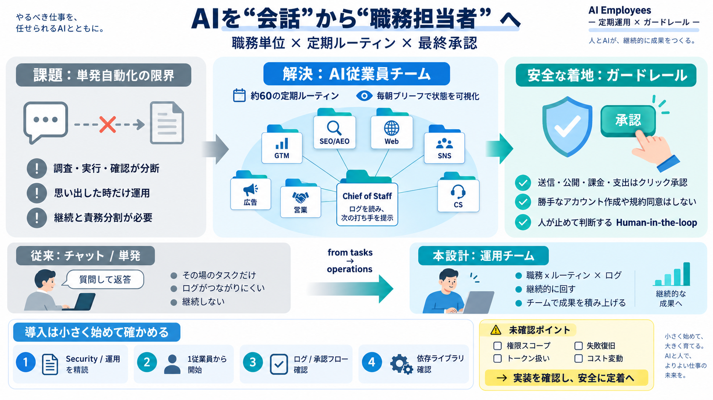

Meta Launches Muse Code, Its First AI Coding Agent to Take on Claude and Codex - Memeburn
The contributor tier is the most important strategic signal in this launch. At $0.20 per million output tokens versus Cl…

AIを「会話」から「職務担当者」に寄せ、GTM・SEO・広告・営業などをフォルダ単位の定期ルーティンとして運用します。
単発の自動応答は、調査→実行→確認→改善がつながらず、運用が「思い出した時だけ」になりやすいです。
AI従業員は、GTM・SEO/AEO・Web開発・SNS・広告・営業・CS・Chief of Staff（参謀）など担当ロールの箱として提供されます。
各AI従業員には、ファイルベースで管理された約60の定期ルーティンが用意され、利用者のPC上で実行されて毎朝ブリーフを返します。
定期実行により、インデックス確認・ランクリサーチ・エラートリアージ・返信ドラフトなどを回し、運用の「思い出す負担」を減らします。
発送・投稿・送信・公開・課金・支出など重大操作は利用者のクリック承認が必要で、AIが勝手に実行しない方針が強調されています。
アップグレード時に利用者が編集したファイルは上書きせず（例：npx ai-employees upgrade leaves every file you edited alone）、設定の保守性を上げます。
AI Employeesは「質問して返答」ではなく、職務×ルーティン×ログで状態を扱い、Chief of Staffが次の打ち手を出す点が“運用チーム”に近いです。
ガードレール方針はある一方で、実際に安全性を左右する権限スコープや認証情報の扱い、依存ライブラリ脆弱性などは抜粋だけでは判定できません。
定期実行が遅れたり二重発火しても「仕事が済んでいれば何もしない」趣旨はあるものの、失敗検知や部分完了の扱いはログや実装確認が必要です。
導入時は、(1) Security/運用ドキュメント精読、(2) 1従業員だけ段階導入、(3) ログと承認フロー確認、(4) 依存関係の安全性確認、が推奨されます。
AI Employeesは、職務単位×定期ルーティン×最終承認という形で、AIを“担当者として回す”土台を提供します。
The contributor tier is the most important strategic signal in this launch. At $0.20 per million output tokens versus Cl…
Xing4.0-29B-A4B is an Apache-2.0 mixture-of-experts model with 29B parameters and 4B active per token. It scores 75.00 o…
Outcome-focused: Care about "do we catch bugs" not "do we own infrastructure." Lean operations: $3K-$30K/year subscript…
While closed-source AI models can quickly process large amounts of data, require little maintenance, and integrate insta…
The company has strongly committed to its AI strategy, announcing last month a plan to invest $53 billion in its cloud c…